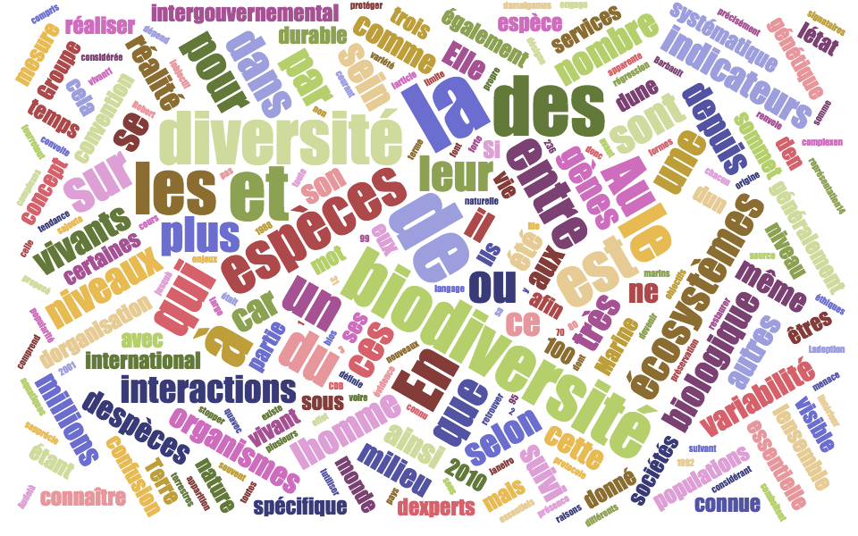
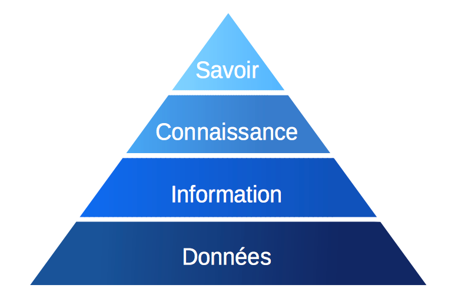
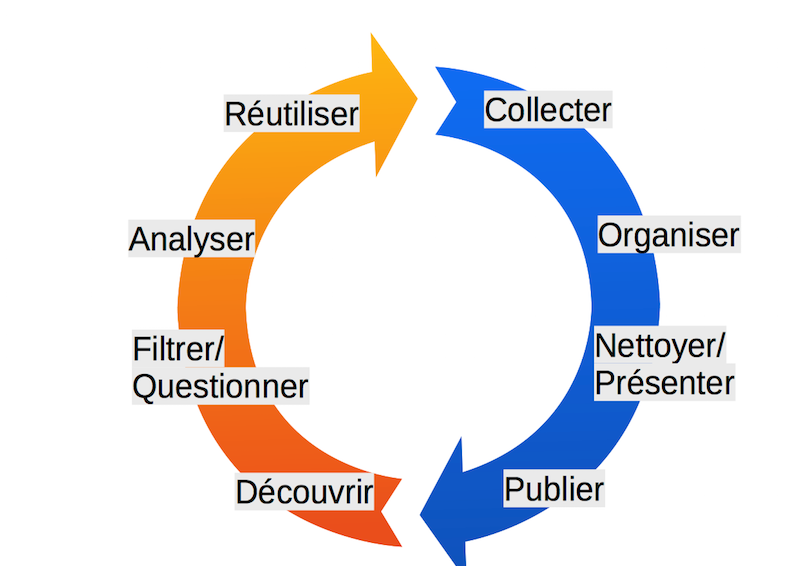
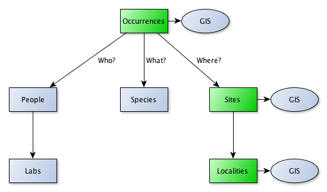
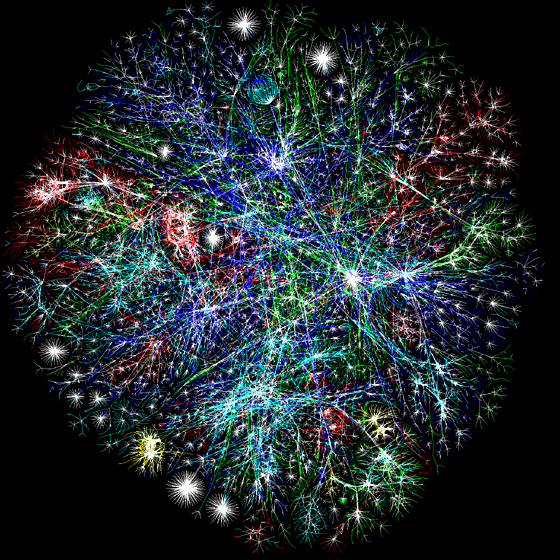
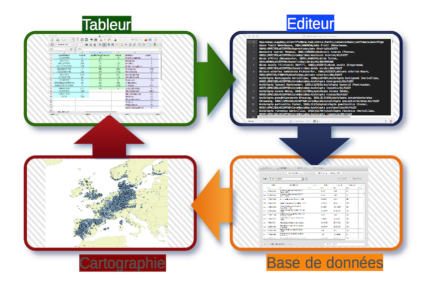

Introduction aux
bases de données
en biodiversité
Atelier CEBioS MRV, Septembre 2015
André Heughebaert
Belgian Biodiversity Platform
Contenu
1. Introduction

Données en Biodiversité
- Taxonomie, noms vernaculaires, specimens types
- Population, habitat, aire de répartitition
- Description, traits, propriétés, génome
- Relation entre espèces, ecosystèmes
- Observations, collections
- Indicateurs, modèles
- Publications scientifiques (et autres)
- Multimedia: images, sons, vidéos...
- Droit: Législations, règlementations, aires protégées...
- Communauté d'experts, scientifiques, amateurs
Données-Information

Données-Information
Une donnée est une description élémentaire d’une réalité. C’est par exemple une observation ou une mesure.
La donnée est dépourvue de tout raisonnement, supposition, constatation, probabilité.
L'information est une donnée compréhensible,
qui a un sens pour la personne qui la recoit.
La connaissance est le résultat d'une réflexion sur les informations analysées.
Le savoir permet le discernement final sur le contenu (informations et connaissances) et le jugement de bon sens.
Données-métadonnées
Les données (primaires) : Quoi?, Quand?, Où?, Combien?...
Les métadonnées : Qui?, Comment? Pourquoi?...
Pas de données sans métadonnées!
Cycle de vie des données

2. Données
(notions de base)
- Espèces, Individus, Habitats, Ecosystèmes, Menaces, Indicateurs... sont des entités différentes
- Chaque entité a des attributs: par exemple
le nom, l'aire de répartition ou le status de protection pour une espèce.
2. Données
(notions de base)
- Il existe des relations entre entités
- telle espèce vit dans tel habitat
- tel individu appartient à telle espèce
- telle espèce parasite telle autre espèce
- Il existe des contraintes sur les attributs
- un nom scientifique est exprimé par un binôme latin,
il est unique! - une latitude est comprise entre -90° et +90°.
- une longitude est comprise entre -180° et +180°.
- un nom scientifique est exprimé par un binôme latin,
3. Metadonnées
Metadonnées: données descriptives d'un jeu de données.
- Qui?: nom, prénom, institution, partenaires
- Comment?: méthodologie, matériel, fréquence, limites...
- Pourquoi?: projet de recherche ou de monitoring,
source de financement...
3. Metadonnées
- Métadonnées de base
- Geographiques
- Temporels
- Taxonomiques
- Mots-clés
- Description du projet
- Méthode d'échantillonage
4. SQL
(base de données relationnelle)

Organisez vos données suivants vos besoins.
4. SQL
(schéma de données)

4. SQL
(notions de base)
| Entité | Table |
| Attribut | Colonne |
| Relation | Clé+index |
| Contrainte | Contrainte |
4. SQL
(notions de base)
- SQL=Structured Query Language,
en français langage de requête structurée. - SQL permet de rechercher, d'ajouter, de modifier ou de supprimer des données.
- La base de données vérifie automatiquement toute règle ou contrainte et garantit ainsi l'intégrité de vos données.
4. SQL
(create)
create table people (
peo_id integer primary key,
lab_id integer references labs,
peo_familyName text,
peo_firstName text,
peo_beginDate text,
peo_endDate text);
create table sites (
sit_id integer primary key,
loc_id integer references localities,
sit_name text,
sit_latitude real,
sit_longitude real,
sit_uncertainty integer);
create table species(
spe_id integer primary key,
spe_scientificName text not null unique,
spe_genus text,
spe_species text,
spe_GUID text);
4. SQL
(select)
Les requêtes permettent d’interroger la base de données.
select * from occurrences where occ_date > '1830-01-01';
select occ.id, occ_latitude, occ_longitude from occurrences
where occ_latitude is not null;
4. SQL
(join)
Les jointures permettent d’associer plusieurs tables dans une même requête.
select * from occurrences occ
left join people peo on peo.peo_id = occ.peo_id
where (occ.occ_date < peo.peo_beginDate) or
(occ.occ_date > peo.peo_endDate);
4. SQL
(view)
Les vues présentent les résultats d'une requête sous forme d'une table virutelle.
CREATE VIEW observations AS
select occ.occ_id AS id, spe.spe_scientificName AS scientificName, spe.spe_GUID AS URL, occ.occ_date AS date, coalesce(occ.occ_latitude,sit.sit_latitude) AS latitude, coalesce(occ.occ_longitude, sit.sit_longitude) AS longitude,
coalesce(occ.occ_uncertainty,sit.sit_uncertainty) AS uncertainty, loc.loc_name AS locality, loc.loc_country AS country, peo.peo_firstName || ' ' || peo.peo_familyName AS observer, lab.lab_name AS lab
from (((((occurrences occ left join sites sit on((sit.sit_id = occ.sit_id)))
left join localities loc on((loc.loc_id = sit.loc_id)))
left join species spe on((spe.spe_id = occ.spe_id)))
left join people peo on((peo.peo_id = occ.peo_id)))
left join labs lab on((lab.lab_id = peo.lab_id)));
select * from observations;
4. SQL
(demo)
4. SQL
(règles d'or)
Gardez vos entités(=tables) simples.
Une seule information par colonne.
Utilisez des identifants uniques et persistants.
Utilisez des noms simples et parlants.
Evitez les redondances, source d'erreur.
Utilisez des vocabulaires fermés
(eg code ISO 3166-1-alpha-2 pour pays).
5. NoSQL

5. NoSQL
A côté des base de données relationnelles, ils existent d'autres solutions pour organiser/interroger vos données:
- Clés-valeurs
- Triplets, RDF
- Graph database
- Base de données orientées objets
- ...
6. Outils
Être à l'aise avec vos outils va grandement vous simplifier la vie.
6. Outils(Démo)

6. Outils

7. Standards
(d'échanges de données)
- JSON est un format texte léger; facile à lire ou à écrire pour des humains et aisément analysable ou générable par des machines.
- CSV(ou TSV) format texte de données tabulaires. Chaque ligne du texte correspond à une ligne du tableau et les virgules(ou tab) correspondent aux séparations entre les colonnes.
- Darwin Core (DwC) est un ensemble de standards pour le partage des données de biodiversité. Il a été développé par le groupe international TDWG.
Des questions?

Fait avec reveal.js - HTML Presentations made easy